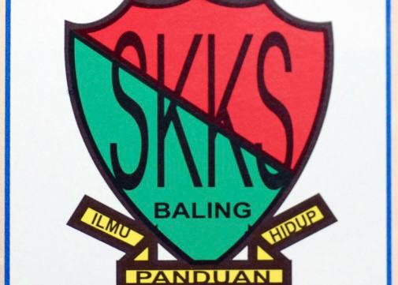
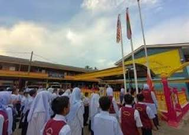

Sekolah Kebangsaan Kampung Sadek
-
UPKK
- Al Quran: A
- Aqidah: A
- Sirah: A
- Adab: A
- Jawi & Khat: A
- Bahasa Arab: A
- Ibadah: A
- Amali Solat: A
-
UPSR
- Bahasa Melayu (Pemahaman): A
- Bahasa Melayu (Penulisan): A
- Bahasa Inggeris (Pemahaman): C
- Bahasa Inggeris (Penulisan): B
- Matematik: A
- Sains: B

